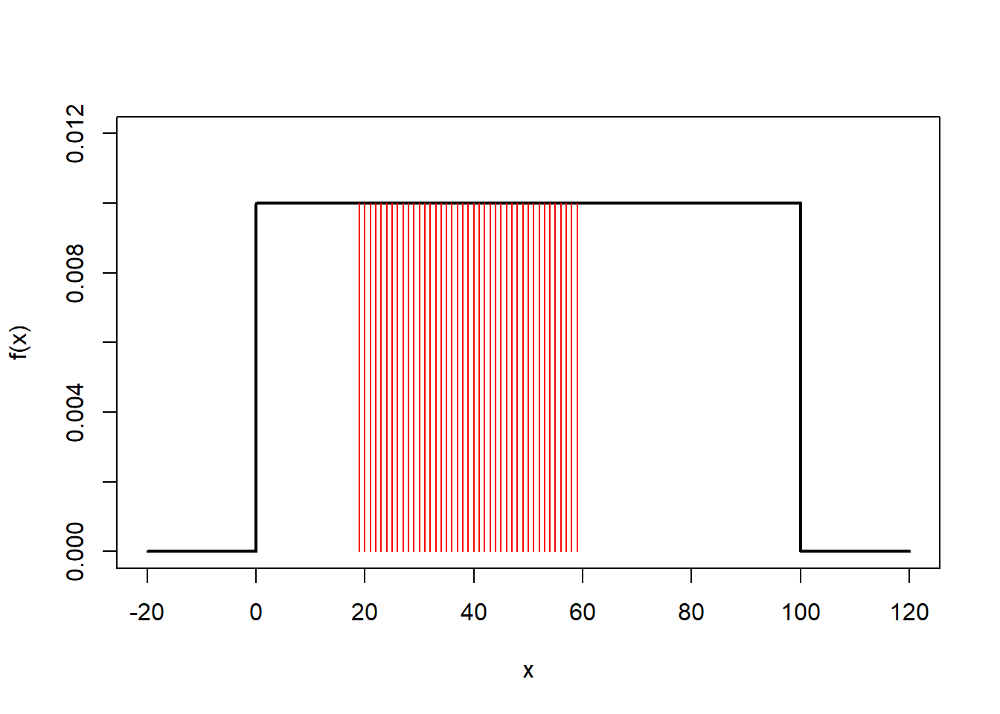
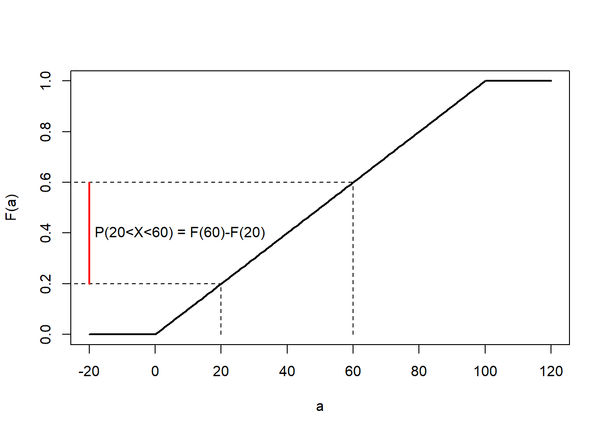
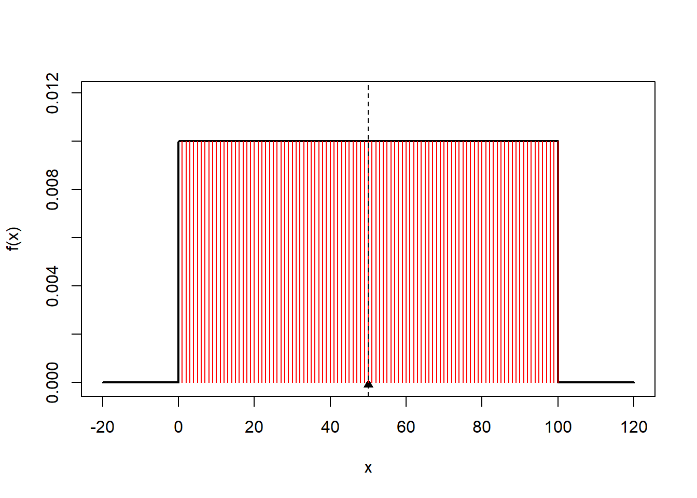

Chapter 6 Variables aleatorias continuas
6.1 Objetivo
En este capítulo estudiaremos variables aleatorias continuas.
Definiremos la función de densidad de probabilidad, su media y varianza. De forma similar a las variables aleatorias discretas, definiremos la función de distribución de probabilidad.
6.2 Variables aleatorias continuas
En el capítulo pasado usamos las probabilidades de variables aleatorias discretas para definir la función de masa de probabilidad \[f(x)=P(X= x)\]
Donde la probabilidad de que la variable aleatoria tome el valor \(x\) la entendemos como el valor de su frecuencia relativa, cuando el número de repeticiones del experimiento aleatorio tiende a infinito.
Cuando hablamos de datos continous vimos que teníamos que transformarlos en variables discretas (bins) para producir tablas de frecuencias relativas o histogramas. Veamos cómo definir las probabilidades de las variables continuas teniendo en cuenta estas particiones.
Ejemplo ( misofonía )
Reconsideremos el ángulo de convexidad de los pacientes con misofonía (Sección 2.21). El ángulo de convexidas de 123 pacientes fue medido. Entendimos cada medición como el resultado de un experimento aleatorio que repetimos 123 veces y que podíamos describir en una tabla de frecuencias o en un histograma.
Para hacer esto redefinimos los resultados como pequeños intervalos regulares (bins) y calculamos la frecuencia relativa de cada intervalo.
## outcome ni fi
## 1 [-1.02,3.46] 8 0.06504065
## 2 (3.46,7.92] 51 0.41463415
## 3 (7.92,12.4] 26 0.21138211
## 4 (12.4,16.8] 20 0.16260163
## 5 (16.8,21.3] 18 0.146341466.3 frecuencias relativas
Por lo tanto, definimos la probabilidad de observar un intervalo \(i\) como la frecuencia relativa del intervalo cuando \(N \rightarrow \infty\)
\[ f_i =\frac{ n_ i }{ N} \rightarrow P( x_i \leq X \leq x_i + \Delta x)\]
Esta probabilidad depende de la longitud de los bins \(\Delta x\).
Si hacemos los bins cada vez más pequeños, las frecuencias se hacen más pequeñas y, por lo tanto,
\[P(x_i \leq X \leq x_i + \Delta x) \rightarrow 0\] cuando \(\Delta x \rightarrow 0\) porque \(n_i \rightarrow 0\)
Veamos cómo las frecuencias relativas se hacen más pequeñas cuando dividimos el rango de \(X\) en \(20\) bins
## outcome ni fi
## 1 [-1.02,0.115] 2 0.01626016
## 2 (0.115,1.23] 0 0.00000000
## 3 (1.23,2.34] 3 0.02439024
## 4 (2.34,3.46] 3 0.02439024
## 5 (3.46,4.58] 2 0.01626016
## 6 (4.58,5.69] 4 0.03252033
## 7 (5.69,6.8] 11 0.08943089
## 8 (6.8,7.92] 34 0.27642276
## 9 (7.92,9.04] 12 0.09756098
## 10 (9.04,10.2] 4 0.03252033
## 11 (10.2,11.3] 3 0.02439024
## 12 (11.3,12.4] 7 0.05691057
## 13 (12.4,13.5] 2 0.01626016
## 14 (13.5,14.6] 6 0.04878049
## 15 (14.6,15.7] 4 0.03252033
## 16 (15.7,16.8] 8 0.06504065
## 17 (16.8,18] 4 0.03252033
## 18 (18,19.1] 9 0.07317073
## 19 (19.1,20.2] 3 0.02439024
## 20 (20.2,21.3] 2 0.016260166.4 función de densidad de probabilidad
Definimos una cantidad en un punto \(x\) que es la probabilidad por unidad de distancia de que una observación esté en el bin infinitesimal entre \(x\) y \(x+dx\)
\[f(x)= \frac{ P(x\leq X \leq x+dx )}{dx}\]
\(f(x)\) se llama la función de densidad de probabilidad.
Por lo tanto, la probabilidad de observar \(X\) entre \(x\) y \(x+dx\) está dada por
\[P( x\leq X \leq x+dx )= f(x) dx\]
Definición
Para una variable aleatoria continua \(X\), una función de densidad de probabilidad es tal que
- Es positiva:
\[f(x) \geq 0\]
- La probabilidad de observar cualquier valor de \(x\) es 1:
\[\int_{-\infty}^{\infty} f(x) dx = 1\]
- La probabilidad de observar un valor dentro de un intervalo es el área bajo la curva:
\[ P( a\leq X \leq b)=\int_{a}^{b} f(x) dx\]
Las propiedades aseguran que \(f(x)dx\) satisfacen las propiedades de probabilidad de Kolmogorov.
La función de densidad de probabilidad es un paso más en la abstracción de probabilidades en la que añadimos el límite continuo
\[dx \rightarrow 0\]
Todas las propiedades de las probabilidades se traducen en términos de densidades y por lo tanto cambiamos sumatorios por integrales
\[\sum \rightarrow \int\]
Las densidades de probabilidad son cantidades matemáticas que no necesariamente representan experimientos aleatorios.
Un interés fundamental en estadística es describir las densidades que describen nuestro experimento aleatorio concreto.
6.5 Área total bajo la curva
Ejemplo (gotas de lluvia)
tomemos una densidad de probabilidad que podría describir la variable aleatoria que mide dónde cae una gota de lluvia en una canaleta de \(100\) cm de longitud.
\[ f(x)= \begin{cases} \frac{1}{100},& \text{si } x\in (0,100)\\ 0,& de\, otra\, forma \end{cases} \]
Verifiquemos que la función satisface las tres propiedades de una densidad de probabilidad.
es evidente a partir de la definición que \(f(x) \geq 0\)
La probabilidad de observar cualquier valor de \(X\) es el área total bajo la curva
\(P( -\infty \leq X \leq \infty )= \int_{-\infty }^{\infty } f(x) dx = 100*0.01= 1\)

6.6 Área bajo la curva
- La probabilidad de observar \(X\) en un intervalo es el área bajo la curva dentro del intervalo
- \(P( 20 \leq X \leq 60) = \int_{20}^{60} f(x) dx = (60-20)*0.01=0.4\)

6.7 Probabilidades de variables continuas
Para variables continuas, calculamos la probabilidad de que la variable esté en un intervalo dado. Eso es
\[P( a \leq X \leq b)\] Recordemos que para variables continuas, la probabilidad de que el experimento nos dé un número real particular es cero: \(P(X= a)= 0\)
La probabilidad \(P( a \leq X \leq b)\) es el área bajo la curva de \(f(x)\) entre \(a\) y \(b\)
- \(P( a \leq X \leq b) = \int_{a}^{b} f(x) dx\)

6.8 Distribución de probabilidad
La distribución de probabilidad \(F(c)\) definida como la acumulación de probabilidad hasta el resultado \(C\)
\(F(c) = P( X \leq c)\)
se puede utilizar para calcular la probabilidad \(P( a \leq X \leq b)\).
Si consideramos que:
- la probabilidad acumulada hasta \(b\) está dada por
- \(F(b) = P( X \leq b)=\int_{-\infty }^bf(x)dx\)

- la probabilidad acumulada hasta \(a\) es
- \(F(a) = P( X \leq a)\)

Entonces, la probabilidad entre \(a\) y \(b\) viene dada por la diferencia en el valor de la distribución de probabilidad
- \(P( a\leq X \leq b) = \int_a^b f(x)dx=F(b)-F(a)\)

Definición
La distribución de probabilidad de una variable aleatoria continua se define como
\[F(a)= P( X\leq a) =\int_{-\infty } ^af(x)dx\]
y tiene las siguientes propiedades:
- Está entre \(0\) y \(1\):
\[F(-\infty )= 0\,\, y \,\,F(\infty )=1\]
- Siempre aumenta:
\[F(a)\leq F(b)\]
si \(a \leq b\)
- Se puede utilizar para calcular probabilidades:
\[P( a \leq X \leq b)=F(b)-F(a)\]
- Recupera la densidad de probabilidad:
\[f(x)=\frac{ dF (x )}{ dx}\]
Usamos distribuciones de probabilidad para calcular probabilidades de una variable aleatoria dentro de intervalos, y su derivada es la función de densidad de probabilidad.
Ejemplo (gotas de lluvia)
Para la función de densidad uniforme:
\[ f(x)= \begin{cases} \frac{1}{100},& \text{si } x\in (0,100)\\ 0,& de\, otra\, forma \end{cases} \]
Encontramos que la distribución de probabilidad es
\[ F(a)= \begin{cases} 0,& \text{si } a \leq 0 \\ \frac{a}{100},& \text{si } a\in (0,100)\\ 1, & \text{si } 100 \leq a \\ \\ \end{cases} \]
6.9 Gráficas de probabilidad
- Podemos dibujar la probabilidad de una variable aleatoria en un intervalo como el área bajo la curva de la densidad. Por ejemplo
\[P(20<X< 60)\]

- También podemos dibujar la probabilidad \(P(20<X< 60)\) como la diferencia en los valores de la distribución

6.10 Media
Como en el caso discreto, la media mide el centro de masa de las probabilidades
Definición
Supongamos que \(X\) es una variable aleatoria continua con función de probabilidad densidad \(f(x)\). El valor medio o esperado de \(X\), denotado como \(\mu\) o \(E(X)\), es
\[\mu=E(X)=\int_{-\infty}^\infty x f(x) dx\]
Es la versión continua del centro de gravedad.
Ejemplo (gotas de lluvia)
La variable aleatoria con densidad de probabilidad
\[ f(x)= \begin{cases} \frac{1}{100},& \text{si } x\in (0,100)\\ 0,& de\, otra\, forma \end{cases} \]
Tiene un valor esperado en
\[E(X)=50\]

6.11 Varianza
Como en el caso discreto, la varianza mide la dispersión de probabilidades sobre la media
Definición
Supongamos que \(X\) es una variable aleatoria continua con función de densidad de probabilidad \(f(x)\). La varianza de \(X\), denotada como \(\sigma^2\) o \(V(X)\), es
\[\sigma^2=V(X)=\int_{-\infty}^\infty (x-\mu)^2 f(x) dx\]
Es la versión continua del momento de inercia.
6.12 Funciones de \(X\)
En muchas ocasiones, estaremos interesados en resultados que sean función de las variables aleatorias. Tal vez nos interese el cuadrado de la elongación de un muelle, o la raíz cuadrada de la temperatura de un motor.
Definición
Para cualquier función \(h\) de una variable aleatoria \(X\), con función de masa \(f(x)\), su valor esperado viene dado por
\[E[h(X)]= \int_{-\infty}^{\infty} h(x) f(x)dx\] De esta definición recuperamos las mismas propiedades que en el caso discreto
La media de una función lineal es la función lineal de la media: \[ E( a\times X +b)= a\times E(X) +b\] para \(a\) y \(b\) escalares.
La varianza de una función lineal de \(X\) es:
\[V(a\times X +b)= a^2\times V(X)\]
- La varianza sobre el origen es la varianza sobre la media más la media al cuadrado:
\[E(X^2)= V(X)+E(X)^2\]
6.13 Ejercicios
6.13.0.1 Ejercicio 1
Para la densidad de probabilidad
\[ f(x)= \begin{cases} \frac{1}{100},& \text{si } x\in (0,100)\\ 0,& de\, otra\, forma \end{cases} \]
- calcular la media (R:50)
- calcular la varianza usando \(E(X^2)= V(X)+E(X)^2\) (R:100^2/12)
- calcula \(P( \mu-\sigma \leq X \leq \mu+\sigma)\) (R: 0.57)
- ¿Cuáles son el primer y tercer cuartiles? (R: 25; 75)

6.13.0.2 Ejercicio 2
Dado
\[ f(x)= \begin{cases} 0, & x < 0 \\ ax, & x \in [0,3] \\ b, & x \in (3,5) \\ \frac{b}{3}(8-x),& x \in [5,8]\\ 0, & x > 8 \\ \end{cases} \]
¿Cuáles son los valores de \(a\) y \(b\) tales que \(f(x)\) es una función de densidad de probabilidad continua ? (R: 1/15; 1/5)
¿Cuál es la media de \(X\)? (R:4)
6.13.0.3 Ejercicio 3
Para la densidad de probabilidad
\[ f(x)= \begin{cases} \lambda e^{-\lambda x},& \text{si } x \geq 0\\ 0,& de\, otra\, forma \end{cases} \]
- Confirmar que se trata de una densidad de probabilidad
- Calcular la media (R: 1/\(\lambda\))
- Calcule el valor esperado de \(X^2\) (R: 2/\(\lambda^2\))
- Calcular la varianza (R: 1/\(\lambda^2\))
- Hallar la distribución de probabilidad \(F(a)\) (R: \(1- exp( -\lambda a)\))
- Encuentra la mediana (R: \(\log{ 2}\) /\(\lambda\))